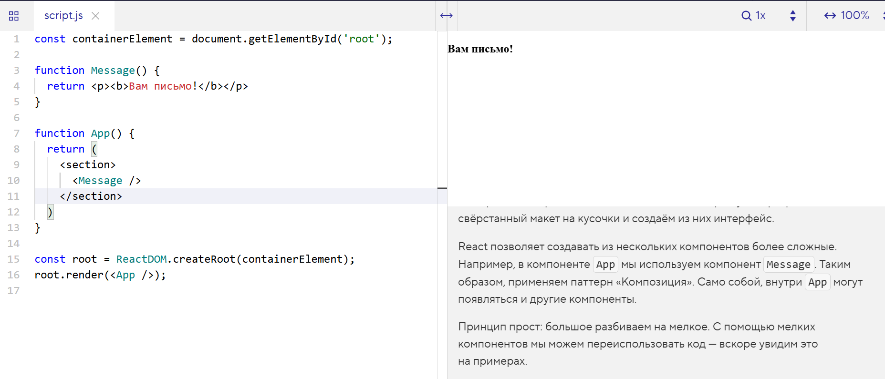

Как правило, в проекте много компонентов. По факту мы «разрезаем» свёрстанный макет на кусочки и создаём из них интерфейс.
React позволяет создавать из нескольких компонентов более сложные. Например, в компоненте App мы используем компонент Message. Таким образом, применяем паттерн «Композиция». Само собой, внутри App могут появляться и другие компоненты.
Принцип прост: большое разбиваем на мелкое. С помощью мелких компонентов мы можем переиспользовать код — вскоре увидим это на примерах.
